Prism Bastion · 16 полных векторных моделей, 6 вторичных накладок и 6 допустимых финальных кросс-путей. Изображения представлены без увеличения коллизионной площади.
A / МетеорB / КассетаC / Осветитель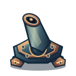
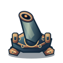
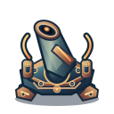
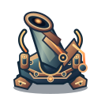
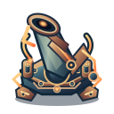
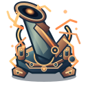
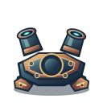
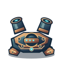
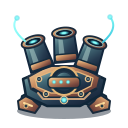
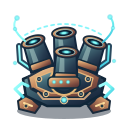
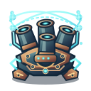
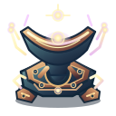
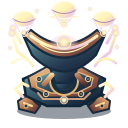
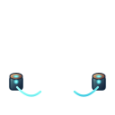
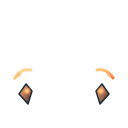
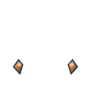
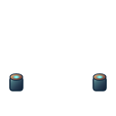
